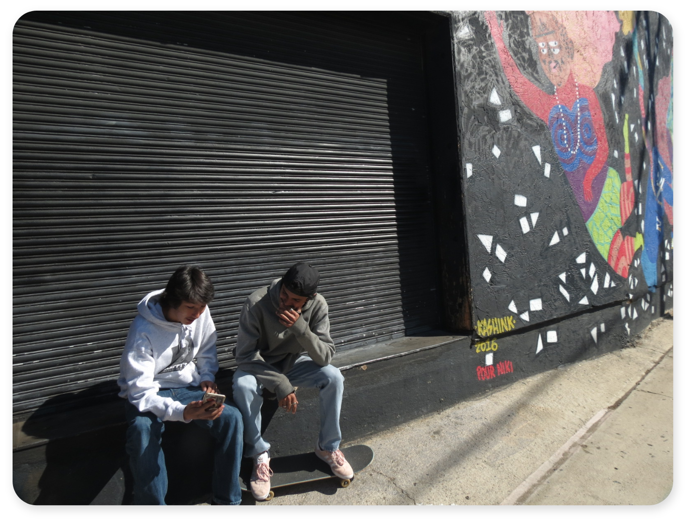

Slappy's Garage UX
 A skateboarder designed web experience. Which allows users who are familliar with, or have little prior knowledge of skateboarding, to easily acess essential information about Slappy’s Garage.
A skateboarder designed web experience. Which allows users who are familliar with, or have little prior knowledge of skateboarding, to easily acess essential information about Slappy’s Garage.
My Roles
Brand Strategist, Graphic Designer, Responsive Web Designer
Brand Promise
Inspired by a skateboarder's desire to connect to brands through a web experience.
Objective
A responsive website where users can easily find Slappy’s Garage locations, learn about team riders, purchase products, and connect with the shop and skate team on social media.
Outcome
Web and storefront traffic could increase for Slappy’s Garage, if they redesign their websie. They may also see increased following of the skate shop and team riders social media.
Target Audience
Skateboarders, Youth (10-25), California (San Diego), Urban, Community/Family
Audience Needs
Skateboarders, and other users need easy access to information about the skate shop, team riders, and particular products Slappy’s Garage carries.


Challenge
Presenting all essential information to users, while bringing emphasis to the people who make Slappy's Garage a friendly local skate shop.
Solution
In order to present all the information clearly, I used my research on Slappy's to inform the heirarchy of information. Each section has an optional content slider. Users can use these to slide through content in selected sections for additional information.
Initial Sketches


Design Process
I researched web sites of local skate shops, and other skateboard brands to compare the information they present to users. I consistently saw webpages that highlighted options to view and purchase product. But, negleted presenting information about where to find the shop, and who the skateboarders associated with the brand are.
The Slappy’s Garage web experience, needs to provide information for the skate shop's local (San Diego) community. When wireframing I focused on giving users easy access to information, by using large content sections. As I began to prototype, I made sure to highlight content areas where users can find information about the shop location, and connect with the skateboarding community.
Wireframes
 Prototypes & Story
Prototypes & Story
As I was working with the branding system for Remeber This, the Slappy’s Garage film, I saw an opportunity to design touchpoints for the skate shop using the same branding. In my research, I learned that Slappy’s Garage hasn’t invested in creating a strong web presence, because they’ve seized an opportunity to open a new location near a cutting edge skatepark. However, this was an opportunity for me to match their web presence and business goals, by using the website to highlight their multiple locations, and the skateboard team who attract skateboarders from the local and global community.

These prototypes, are my first attempts in designing the website. I emphasized the store location to be at the forefront of the hompage. However, after receiving feedback from my peers, I saw needed to bring more opportunities for users to learn more about the people involved with Slappy’s Garage. As you can see I made the change and brought more emphasis to the skateboard team when I designed the desktop pages.

Final Deliverables